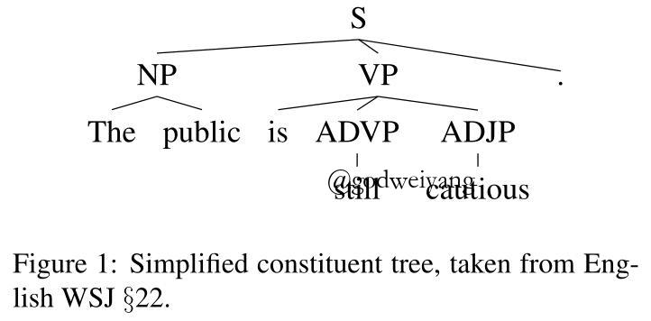
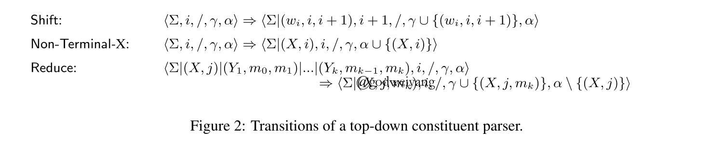
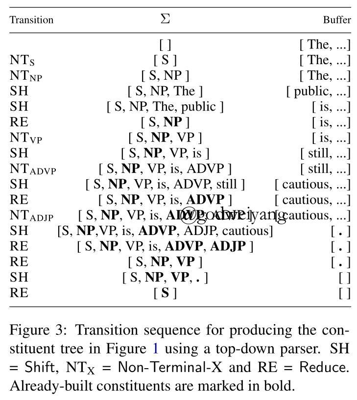
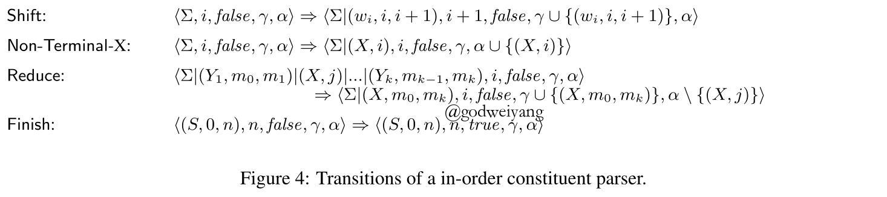
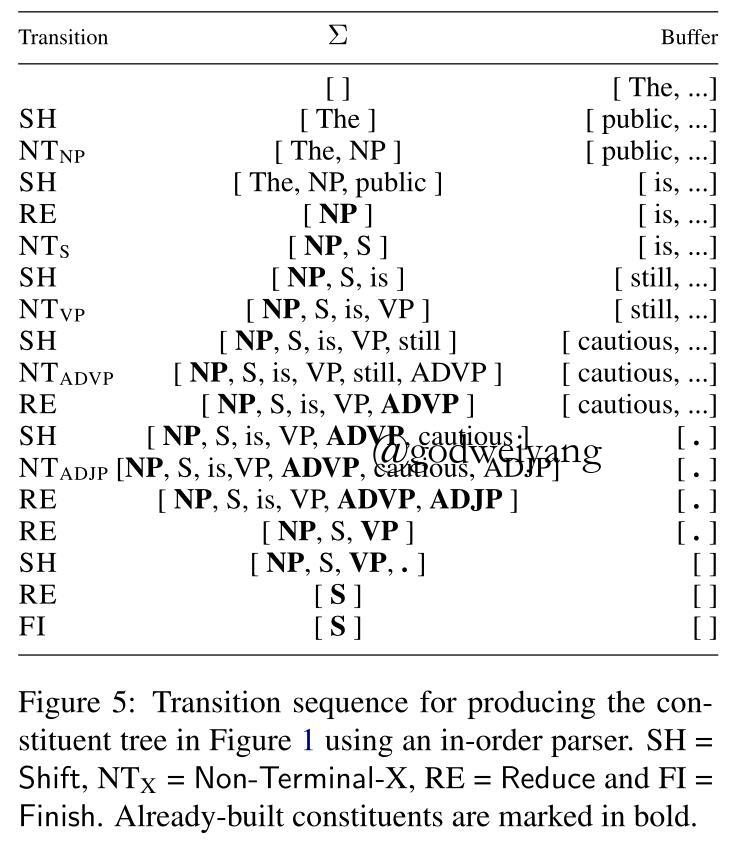

有一句话，宾语是你。“吉下两点一口，又有欠字相依。”
论文地址：Dynamic Oracles for Top-Down and In-Order Shift-Reduce Constituent Parsing
代码地址：github
本文是发表在EMNLP18上的一篇关于Dynamic Oracle的论文，主要介绍了针对自顶向下和中序两种移进归约成分句法分析模型的Dynamic Oracles。在PTB数据集上，取得了单模型最高的F1值92.0（截至论文发稿时是最高的，张岳TACL18的论文已经取得了92.4的最高F1值）。
介绍
Dynamic Oracle是用在转移系统中，防止错误传播的一种手段。而转移系统主要有分为三种：bottom-up、top-down和in-order的转移系统。
其中bottom-up转移系统的Dynamic Oracle在Span-Based Constituency Parsing with a Structure-Label System and Provably Optimal Dynamic Oracles中有很详细的证明，也可以参看我之前的博客Deep Understanding of Dynamic Oracle in Constituent Parsing。
而本文就提出了另外两种转移系统的Dynamic Oracle，其中top-down转移系统主要基于Recurrent Neural Network Grammars，in-order转移系统主要基于In-Order Transition-based Constituent Parsing。
基础知识
形式化定义
bottom-up的转移系统这里就不讨论了，这里主要讨论另外两种转移系统。转移系统的状态用五元组$c = \left\langle {\sum ,i,f,\gamma ,\alpha } \right\rangle $表示，五元组内元素分别表示stack、buffer第一个单词的下标、in-order转移系统中结束标记、已经生成的短语成分集合、stack中非终结符集合。
每个短语成分用三元组$(X, l, r)$表示，其中X是非终结符，l和r是短语的边界下标。而非终结符用二元组$(X, j)$表示，其中j表示X入栈后下一个入栈的单词的下标。

例如对于上图中的句法树，它的gold短语成分集合是
\[(S,0,6),(NP,0,2),(VP,2,5),(ADVP,3,4),(ADJP,4,5)\]如果采用top-down的转移系统，非终结符入栈的顺序为
\[(S, 0), (NP, 0), (VP, 2), (ADVP, 3), (ADJP, 4)\]如果采用in-order的转移系统，非终结符入栈的顺序为
\[(NP, 1), (S, 2), (VP, 3), (ADVP, 4), (ADJP, 5)\]
正如之前所说，top-down中非终结符的下标就是短语的第一个单词的下标，但是in-order不是的，因为短语的第一个子结点已经在非终结符入栈之前形成了，所以它的下标是第二个子结点表示的短语的第一个单词的下标。
之前的top-down和in-order转移系统中并没有用到预测的短语集合$\gamma$和stack里的非终结符集合$\alpha$，但是在本文的转移系统中需要用到，因为本文要用它来改进loss函数，以此来实现Dynamic Oracle。
top-down转移系统


上面两张图分别是top-down转移系统的转移过程和具体的转移示例。注意到REDUCE动作会将新的短语加入到$\gamma$集合中，并且从非终结符集合$\alpha$中删去该非终结符。而NT-X动作会将新的非终结符X加入到非终结符集合$\alpha$中。
in-order转移系统


上面两张图分别是in-order转移系统的转移过程和具体的转移示例，大致细节和top-down转移系统类似。
Dynamic Oracles简介
最后再解释一下Dynamic Oracle是干嘛用的，传统的Static Oracle就是在转移的每一步按照标准转移序列中的action进行转移，但是这样会有一个问题，如果预测的时候某一步预测错了，遇到了一个训练阶段没有出现过的状态，那么该怎么进行转移呢？这时候就要用到Dynamic Oracle，用来针对不同的错误情况进行动态的指导，引导它转移到正确的状态中去。另外在训练时可以手动加入一些错误状态，来训练模型，不然的话遇到的错误状态还是太少了，不足以训练好模型。
Dynamic Oracles
Goldberg (2012)证明了Dynamic Oracle可以通过定义一个损失函数来直接实现，而这个损失函数可以用来衡量当前状态可以产生的最优句法树和标准句法树的距离。最小化这个距离就会使得错误状态也会转移到最终错误最少的状态。而这个损失函数就要和当前状态c挂钩了，这样才能达到和传统的Dynamic Oracle类似的效果。
损失函数
传统的损失函数定义为预测短语成分集合和标准短语成分集合不相交的元素数量，即：
\[\mathcal{l}(c) = \min_{\gamma | c \to \gamma} \mathcal{L}(\gamma, \gamma_G) = \left| { {\gamma _G}\backslash \gamma } \right| + \left| {\gamma \backslash {\gamma _G}} \right|\]
根据上一篇博文的推导，该损失函数可以计算为
\[\mathcal{l}(c) = \min_{\gamma | c \to \gamma} \mathcal{L}(\gamma, \gamma_G) = \left| \mathcal{U}(c, \gamma_G) \right| + \left| {\gamma_c \backslash {\gamma _G}} \right|\]
上面的损失函数是上一篇论文中介绍的bottom-up的转移系统的Dynamic Oracle，但是本文主要讨论top-down和in-order的转移系统，因为转移系统多了non-terminal，所以需要新加入两项损失，用来衡量当前状态可以产生的最优句法树与标准句法树之间的汉明损失。
这两项新加的损失分别是：
- 当前栈中已经生成的non-terminal集合$\alpha_c$中不包含在标准non-terminal集合$\alpha_G$中的non-terminal数量，即$\left| \alpha_c \backslash \alpha_G \right|$。
- 当前栈中违反了标准树中non-terminal顺序的non-terminal数量。
所以最终的损失函数为：
\[\mathcal{l}(c) = \min_{\gamma | c \to \gamma} \mathcal{L}(\gamma, \gamma_G) = \left| \mathcal{U}(c, \gamma_G) \right| + \left| {\gamma_c \backslash {\gamma _G}} \right| + \left| \alpha_c \backslash \alpha_G \right| + out \_ of \_ order(\alpha_c, \alpha_G)\]
前面三项都很容易求得，至于最后一项，可以通过计算栈里的gold non-terminal序列的最长上升子序列来得到，而序列中每个non-terminal的标号就是它在标准树转移序列的non-terminal顺序标号。
短语的可达性
在这里用短语集合${(X, l, r)}$来表示一棵句法树，我们假设状态c的短语集合为$\sum = [(Y_p, i_p, i_{p-1}) \cdots (Y_2, i_2, i_1)|(Y_1, i_1, j)]$，那么我们说，标准句法树中的一个短语$(X, l, r) \in \gamma_G$当且仅当满足如下三个条件之一时，称它是“各自可达短语”：
对于top-down转移系统：
- $(X, l, r) \in \gamma_c$（因为短语已经包含在了状态c已生成的短语集合里，那么它当然是可达的）。
- $j \le l < r \wedge (X, l) \notin \alpha_c$（因为短语还在buffer中，并且短语的non-terminal还没有入栈，所以可以通过入栈$(X, l)$，再不断SHIFT然后REDUCE得到）。
- $l \in \{i_k | 1 \le k \le p\} \wedge j \le r \wedge (X, l) \in \alpha_c$（这种情况表明了短语的左端点恰好位于栈里某个短语的边界处，而右端点又还在buffer里，所以还可以通过不断SHUFT然后REDUCE得到短语。但是如果左端点不是栈里短语的边界，那说明产生了交叉，自然不会可达了。而如果右端点已经在栈里了，那之后也不会得到了，因为转移系统每次都是REDUCE栈顶的短语，不可能从栈里面开始REDUCE的，当然这些前提条件当然是non-terminal$(X, l)$已经在栈里了）。
对于in-order转移系统：
- $(X, l, r) \in \gamma_c$（因为短语已经包含在了状态c已生成的短语集合里，那么它当然是可达的）。
- $j \le l < r$（因为短语还在buffer中，所以可以通过入栈第一个左儿子，再入栈$(X, m)$，再不断SHIFT然后REDUCE得到）。
- $l \in \{i_k | 1 \le k \le p\} \wedge j \le r \wedge (X, m) \notin \alpha_c$（这种情况表明了第一个左儿子已经生成了一部分或者完全生成了，并且根结点non-terminal还没有入栈，所以依然可以生成）。
- $l \in \{i_k | 1 \le k \le p\} \wedge j \le r \wedge (X, m) \in \alpha_c \wedge \exists (Y,l,m) \in \sum $（这种情况表明了第一个左儿子已经完全生成了，并且根结点non-terminal在栈里，所以依然可以生成）。
枚举标准树中的所有短语，根据以上规则可以得到可达短语集合$\mathcal{R}(c, \gamma_G)$，然后从标准短语集合中排除掉这部分短语，剩下的就是不可达短语集合$\mathcal{U}(c, \gamma_G) = \gamma_G \backslash \mathcal{R}(c, \gamma_G)$。这部分短语就是不论采取何种动作序列，最后都不可能生成的短语集合。
关于这两个Dynamic Oracles的正确性，这里就不再证明了，证明过程和上一篇bottom-up的差不多。
实验结果
本文和基础的几个转移系统做了对比，代码也是在他们基础上进行修改的，结果如下：
可以发现，加了Dynamic Oracles之后，结果还是有略微提高的。